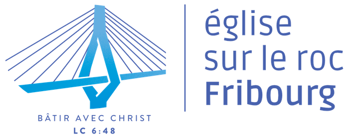

L'Eglise sur le roc est une église fondée par l'église évangélique de Bulle (EEBulle) en ville de Fribourg depuis septembre 2014. Notre église est un espace multiculturel et dynamique pour manifester la présence de Dieu en faveur de ceux qui le recherchent ou le connaissent déjà. Ensemble nous grandissons dans une foi vivante en Jésus-Christ, Sauveur du monde et Seigneur de toute la création. Nous voulons exprimer notre spiritualité de manière adaptée à notre environnement fribourgeois actuel.
L’Eglise Sur le Roc est au bénéfice de l’équipe de ministères du Bulle Network. Elle est conduite par une équipe de leaders locaux.
Cette église est membre des Eglises Evangéliques Apostoliques Romandes (www.eear.ch) et appartient au Réseau Evangélique (www.evangelique.ch).
Eglise Sur le Roc Fribourg
Route Saint-Agnès 8
1700 Fribourg
Pour plus de renseignement, nous sommes joingable aux:
+41 77 456 42 93